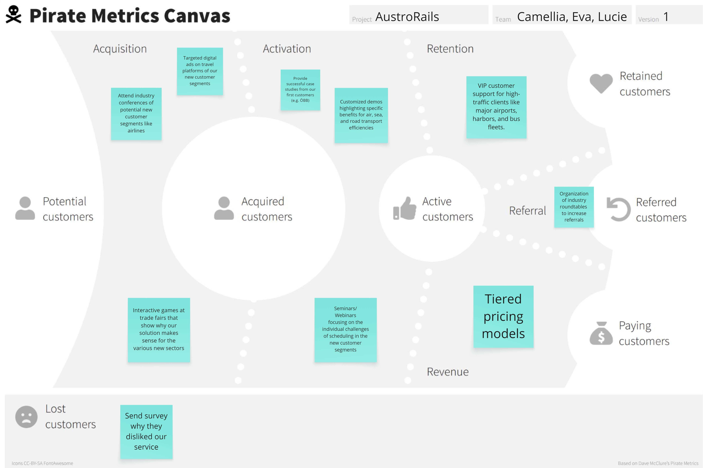
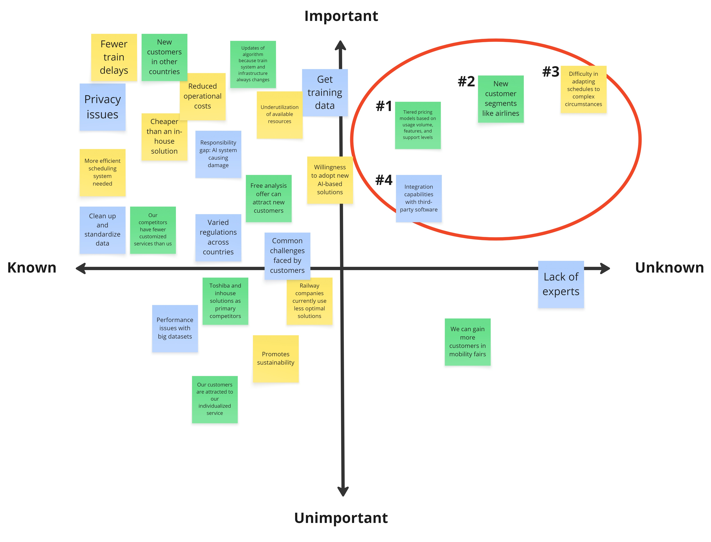
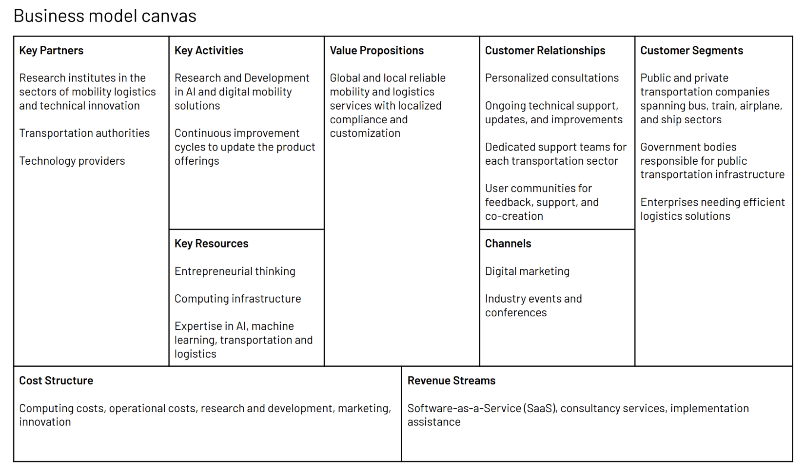
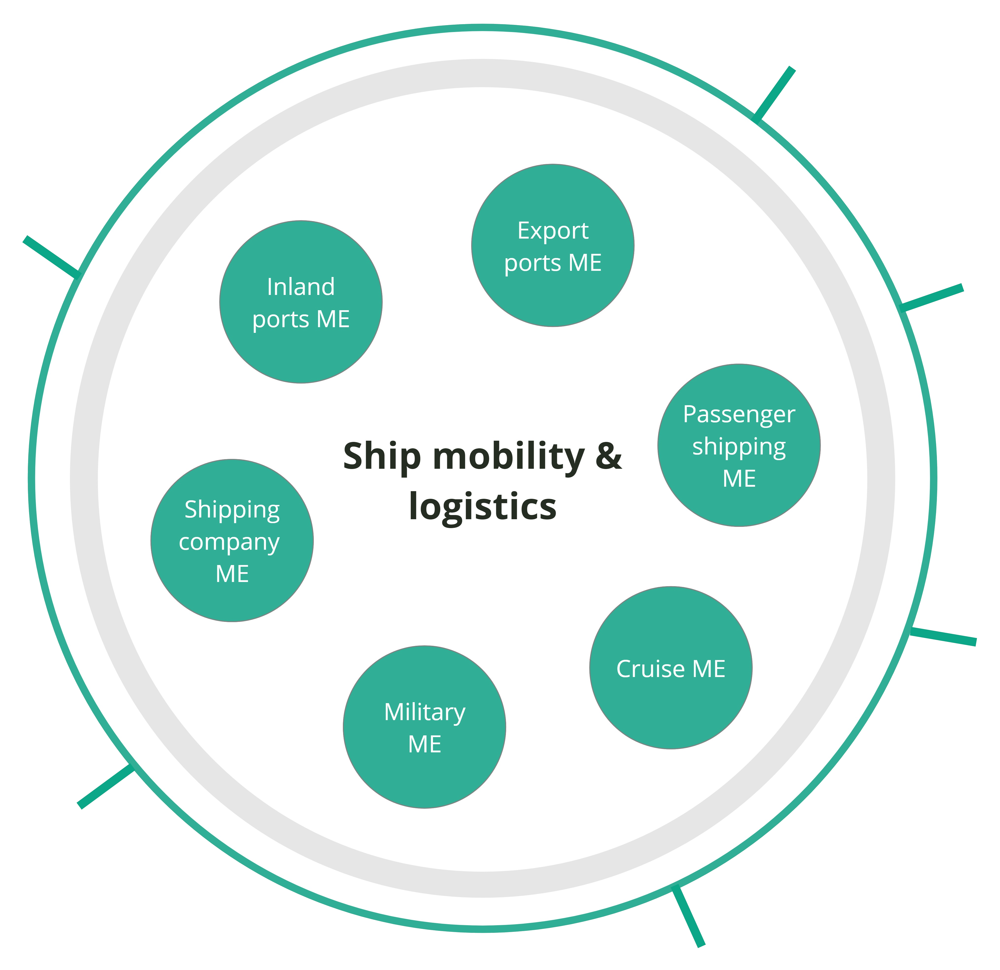

This case study showcases a multi-layered product strategy concept for AustroRails, a fictional mobility brand developed as part of my Human-Computer Interaction master’s coursework. The project involved speculative work designed to simulate real-world strategic thinking from complementary angles—one focused on user experience, the other on business strategy and systemic growth.
- 1. User Experience Strategy: Booking journey analysis, competitor benchmarking, and KPI-based roadmap proposals to improve customer satisfaction and loyalty.
- 2. Systems and Business Innovation: A B2B SaaS scheduling concept, developed through assumption testing, funnel modeling, and strategic structuring to align product-market fit with organizational design.
This was a group project I worked on with my two classmates, Lucie Weber and Eva-Maria Krah. We collaborated closely on most parts, so this case study reflects the perspectives and lessons that stayed with me most.
Note: AustroRails is a fictional brand based on anonymized observations of European rail operators. All data and designs are illustrative and developed for academic purposes only.
EXPERIENCE LEADERSHIP AND INNOVATION MANAGEMENT COURSE: USER EXPERIENCE STRATEGY
Why riders were leaving AustroRails for competitors
AustroRails’ service was investigated through competitive analysis, customer surveys, and usability testing. Consequently, three critical pain points were found:
- Booking complexity → customer service overload: Customers had to navigate two separate apps—one for booking tickets, the other for planning routes—leading to confusion, incomplete bookings, and a surge in support calls. 62% of customers in a survey indicated that booking difficulty was a top frustration, and FlixBus was frequently cited as a smoother alternative.
- No meaningful personalization: Unlike AustroRails, WESTbahn and Deutsche Bahn offered reward points systems that increased customer loyalty and helped bring in new customers through referral incentives.
- Onboard comfort gaps: Online reviews and survey feedback revealed that a rival operator's superior cabin experience was a key reason riders switched.
These findings informed a roadmap focused on simplifying booking, increasing personalization, and enhancing the onboard experience.
How we planned a three-year roadmap to win back loyalty
We developed a three-year phased plan, anchored in KPIs and designed in collaboration with internal stakeholders:
-
Year 1: Facilitate the Booking Process (Quick Win)
- 4× Lean‑UX inspired loops: test → analyze → prototype → iterate.
- Redesign the two legacy apps into a unified, streamlined booking experience.
- Budget: €260k – €310k (UX team salary + software development costs).
- KPI targets: +20% customer satisfaction score, -30% costs for customer service.
-
Year 2: Personalization
- Design a loyalty points program that rewards ticket purchases, referrals, and delay compensation.
- Launch AustroRails Recap: a personalized, shareable summary of each rider’s journeys—inspired by Spotify Wrapped to spark delight and virality.
- Benefits: Increases customer loyalty, brings in new customers, and enhances customer data collection for future targeting.
- KPI targets: -10% costs for customer acquisition, +10% net promoter score.
-
Year 3: Enhance Onboard Experience
- Conduct field studies on trains to identify passenger comfort gaps and service pain points.
- Prototype and pilot low-cost, high-impact improvements.
- KPI targets: +25% customer retention rate, +15% overall customer base.
This roadmap was developed in close alignment with a cross-functional steering group composed of the newly established UX department and the heads of Market Research, Digital Marketing, and Software Development. Their insights ensured strategic coherence, technical feasibility, and stakeholder alignment across the proposal.
COMPLEX INTERACTIVE SYSTEMS COURSE: BUSINESS AND SYSTEMS STRATEGY
Cut delays, unlock revenue, and scale internationally
As part of a simulated B2B mobility startup, we also designed and tested an AI-powered scheduling platform for AustroRails. The goal was to reduce costly delays, open new revenue streams, and scale a scheduling platform for international clients. To meet these goals, we proposed a scalable SaaS model supported by robust organizational structures for long-term viability.
Test assumptions and create a resilient business model
We modeled a scalable product ecosystem by applying three key strategy tools:
- Business Model Canvas: Clarified nine key elements—partners, activities, resources, value propositions, customer segments, channels, relationships, cost structure, and revenue streams—to structure the AI platform’s ecosystem.
- Pirate Metrics (AARRR): Modeled customer acquisition, activation, retention, referral, and revenue.
- Assumption Mapping and Test Cards: Mapped feasibility, desirability, and viability assumptions, then prioritized and tested the most critical ones through structured test cards.


Reimagine structures to scale innovation across markets
Drawing from systems thinking and Conway’s Law, we examined how internal structures influence innovation and scalability. In a speculative growth scenario, we expanded the business model to include a large-scale industry partner, restructuring the startup into a platform-based enterprise composed of semi-autonomous microteams aligned by mobility sectors (e.g., rail, air, maritime). This redesign aimed to reduce bureaucracy, accelerate iteration, and enable long-term resilience in dynamic markets.

